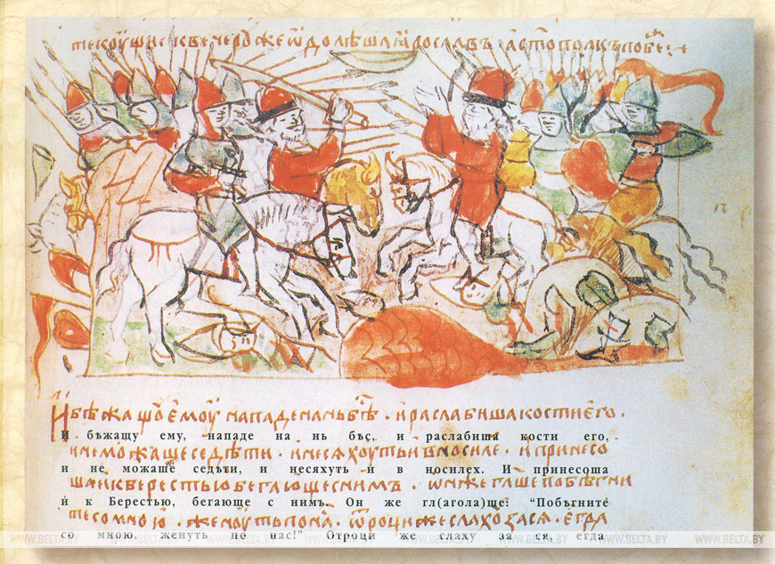
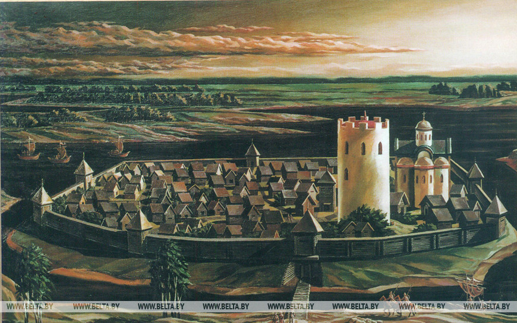
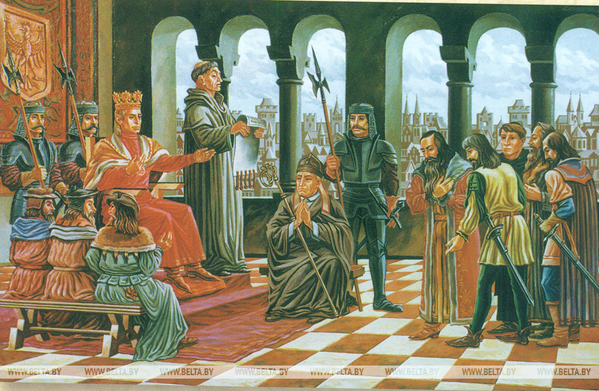
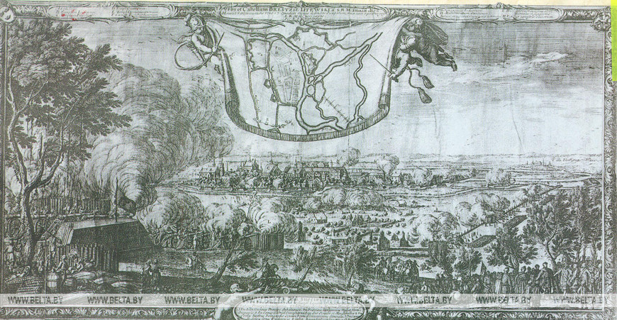
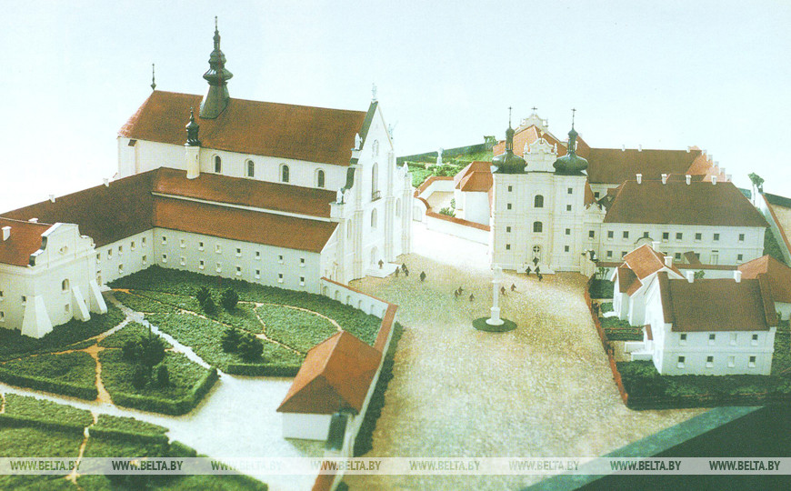
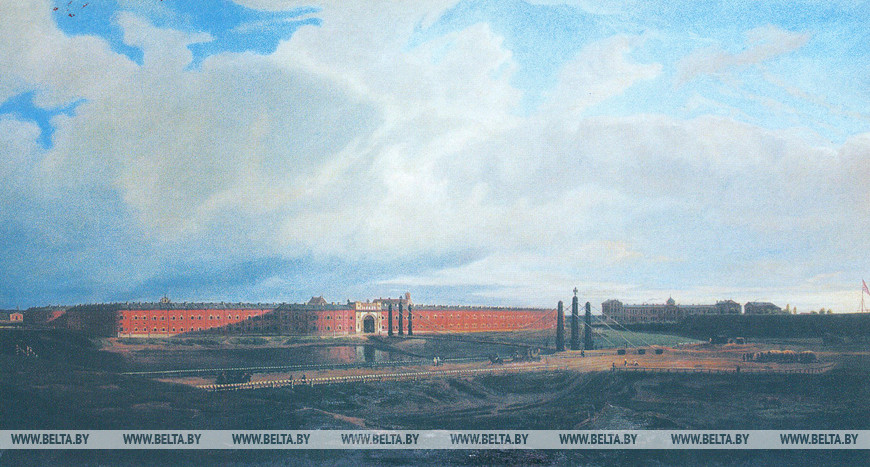

Брест исторический
Брест (летописные названия — Берестье, Брест-Литовск, Брест-над-Бугом) — один из древнейших
городов
Беларуси. Впервые он упоминается в 1019 году в «Повести временных лет» как крупное, хорошо укрепленное
поселение.
Одна из легенд, рассказывающая о возникновении города, гласит, что один богатый купец с
товарищами отправился в Литву. Путь им преградила болотная трясина, в которой намертво увязли повозки,
а лошади не могли сделать ни шагу. Тогда люди нарубили берез и выстлали ими черную
топь. В честь благополучного перехода на небольшом островке они выстроили капище в
честь языческого бога Велеса. На обратном пути купцы сделали привал у Велесова капища,
срубили несколько изб и решили остаться в этих местах навсегда. Но не забыли трудной
дороги по болотам — назвали свое поселение Берестьем. Однако возможно, что название
города произошло также от слов «береста» (береза) или от «берест» (вид вяза), буйно
произраставших на месте древнего поселения.
 Битва Святополка и Ярослава на р. Альте в 1019 г. Миниатюра радзивилловской летописи
В XI-XII веках через город проходили важнейшие торговые тракты в Польшу, страны Балтии и
Европу. Выгодное географическое положение древнего Бреста позволяло ему контролировать
водные пути по рекам Мухавец и Западный Буг к Балтийскому морю. Это привлекало внимание
киевских, владимиро-волынских, галицко-волынских князей, польских королей и феодалов,
которые поочередно отстаивали свое право на владение городом.
С 1199 года Брест в составе Галицко-Волынского княжества получил
значительную самостоятельность. В этот период в городе был построен деревянный
замок.
Для защиты от внешних врагов по приказу волынского князя Владимира Васильковича в
1276-1288 годах в Бресте была возведена башня из брускового кирпича и камня.
Ее высота равнялась 20 м, толщина стен — 1,3 м, благодаря чему она успешно
отражала атаки камнеметных машин. Башня служила центром обороны и командным
пунктом города более пяти веков, пока не была разобрана в 1830-х годах во
время строительства Брестской крепости.
 Берестье в XIII в. Е. Ковальчук, 1996 г. (Музей истории города)
С первой половины XIV века Брест — владение великого князя ВКЛ Гедимина,
затем Кейстута. В 1349-1366 годах город находился под властью польского короля
Казимира III. В 1379 году подвергся нападению рыцарей Тевтонского ордена.
Захватить замок им не удалось, но сам город был разгромлен и сожжен.
В 1390 году великий князи литовский Ягайло овладел Брестом, тогда же городу
было даровано Магдебургское право. Бресту также было позволено использовать
герб и печать, которые впоследствии неоднократно менялись.
 Дарование Берестью права на самоуправление. В. Ковальчук, 1996 г. (Музей истории города)
К началу XV века Брест с населением 5 тыс. жителей сформировался как
торгово-ремесленный и культурный центр ВКЛ. Однако дальнейшему развитию
города помешали нападения Тевтонского ордена: с 1403 года крестоносцы по
несколько раз в год совершали опустошительные набеги на белорусские, польские
и литовские земли. В декабре 1409 года на встрече в брестском замке польский
король Ягайло и великий князь литовский Витовт приняли решение о начале Великой
войны 1409-1411 годов против Тевтонского ордена. Брестская хоругвь принимала
участие в Грюнвальдской битве 1410 года.
В 1413 году после административной реформы ВКЛ Брест вошел в состав
Трокского воеводства и стал центром Брестского староства. В феодальную войну
1432-1439 годов сожжен войсками великого князя Свидригайлы. Привилеем 1441 года
отнесен к главным городам ВКЛ, с 1566 года — центр Брестского воеводства.
Во второй половине XV века стала возрастать роль сухопутных
«дорог-гостинцев», Бужанско-Припятский водный путь утратил свое ведущее
значение. Одна из наиболее значительных дорог, проходивших через Брест,
соединяла столицы Польши и ВКЛ — Краков и Вильно. От этого пути ответвлялись
дороги на Минск, Смоленск, Москву и Киев.
В 1500 году Брест был захвачен крымскими татарами. 15-тысячное войско
хана Менгли Гирея разорило и разрушило город. Не покорив замок, но получив от
горожан большой откуп, татары отступили. И вновь город быстро восстановился.
Брестчане были освобождены от налогов при торговле пивом, медом и воском.
В пользу города шли сборы с привозного зерна, часть доходов каждой лавки и
корчмы, городская ратуша содержалась на средства бани и воскобойни. Окрепли
торговые связи городского купечества со Слуцком, Минском, Могилевом, а также с
украинскими, польскими и литовскими городами. Трижды в год проводились
двухнедельные международные ярмарки.
С 1520 года Брест — центр повета Подляшского воеводства. Пожар 1525
года уничтожил замок и административный центр города. После этого деревянные
дома стали строиться не выше двух этажей, а пострадавшие от стихии горожане на
10 лет были освобождены от всех налогов и повинностей.
В XVI веке в ВКЛ стали распространяться реформационное движение и
кальвинизм. В 1550 году глава кальвинистов ВКЛ Николай Радзивилл Черный стал
брестским старостой. По его инициативе и на его средства в 1553 году в Бресте
были построены первые на белорусских землях кальвинский собор и типография,
которая в 1570 году прекратила свою деятельность. В 1563 году в Брестской
типографии была напечатана всемирно известная Брестская (Радзивилловская)
Библия, представлявшая собой полный текст Священного писания на польском
литературном языке XVI века. Эта Библия, насчитывавшая 738 страниц и 14
гравюр-иллюстраций, стала одним из самых полных и совершенных изданий своего
времени на территории ВКЛ. Впервые в истории белорусского книгопечатания в
Брестской Библии размещен предметный указатель.
Люблинская уния 1569 года объединила ВКЛ и Польшу в новое
государство — Речь Посполитую. В этот период в документах Брест зачастую
упоминается и как Брест Литовский. В том же году в Бресте на церковном соборе
в Николаевской церкви была провозглашена Брестская уния, объединившая на
территории Речи Посполитой православную и католическую церкви.
В первой половине XVII века в Бресте проживали свыше 10 тыс. человек,
существовало 14 цехов, объединявших мастеров 48 профессий. В 1641 году на
Рыночной площади была отстроена новая каменная ратуша, где разместились торговые
лавки, магистрат и суд. Наиболее значительным было мукомольное производство:
в городе работало 10 водяных мельниц.
В 1623 году в центральной части города был возведен иезуитский коллегиум
с библиотекой и аптекой. В коллегиуме изучалось семь свободных наук, богословие,
латинский и греческий языки, а с 1634 года здесь преподавали только профессора.
В иезуитском коллегиуме учился, а позднее работал помощником ректора и преподавал
философию известный мыслитель-атеист и общественно-политический деятель Казимир
Лыщинский, сожженный в 1689 году в Варшаве за свой трактат
«О несуществовании Бога». В конце XVII века в брестском коллегиуме появился
первый в Беларуси школьный театр.
Во времена восстания Богдана Хмельницкого (1648-1654) и русско-польской
войны (1654-1667) Брест не раз становился ареной боевых действий. В 1649 году
оказавшийся во власти повстанцев город в очередной раз был разрушен, погибли
тогда более 2 тыс. из 10 тыс. жителей.
В 1659 году в Бресте был открыт монетный двор для чеканки мелкой монеты —
солида, чтобы выплачивать долг войскам и пополнить опустевшую государственную
казну.
В Северную войну в 1657 году город был сожжен шведскими войсками, а
освобожден 20 августа 1658 года отрядом под командованием М.К.Радзивилла.
 Осада Берестья шведами в 1657 г. Е.Дальберг. Гравюра, 1659 г. (Музей истории города)
В середине XVIII века в Бресте начинается развитие промышленного
производства. В 1770 году открылась первая в Беларуси королевская суконная
мануфактура, насчитывавшая 7 ткацких станков и 12 прялок. Создание мануфактуры
связано с именем последнего короля Речи Посполитой Станислава Августа
Понятовского, родившегося в поместье Волчин на Брестчине.
В 1794 году национально-освободительное восстание под руководством
уроженца Брестчины Тадеуша Костюшко потерпело поражение. Произошел третий
раздел Речи Посполитой, в результате которого в 1795 году город вошел в состав
Российской империи. Став уездным, Брест утратил прежнее административное
значение и право на самоуправление. Первоначально он относился к Слонимской,
позднее к Литовской, а с сентября 1801 года — к Гродненской губернии.
 Макет комплекса Бернардинских монастырей и костелов, Н. Власюк, 1998 г. (Музей истории города)
В 1812 году на десятые сутки после начала войны Брест стал ареной
сражений, а затем оказался в районе действий 3-й русской армии генерала
А.П.Тормасова. Город несколько раз переходил из рук в руки. В декабре 1812
года французские войска окончательно покинули город.
В начале XIX века в городе развивается легкая промышленность, работают
суконная фабрика, винокуренный и маслобойный заводы. С завершением строительства
шоссейной дороги Брест — Варшава заметно оживились и торговые связи города.
В 1830-х годах по приказу русского царя Николая I на месте древнего
города начала строиться крепость. В связи с этим городская застройка была
перенесена с территории при слиянии рек Мухавец и Западный Буг на два
километра восточнее, а жителям выдана ссуда на постройку новых домов.
Постройки старого города были уничтожены или приспособлены для военных целей.
Через пять лет после возведения крепости старый город был полностью разрушен
и перестал существовать.
26 апреля 1842 года Брестская крепость — мощное фортификационное
сооружение общей площадью 4 кв.км — вступило в строй действующих крепостей
России.
 Крепость Брест-Литовск в 1840 г. М.Залесский, 1840 г. (Музей героической обороны Брестской крепости)
С 1835 года на территории Волынского, Кобринского и Забугского предместий
стал возводиться новый город. Центром стало Кобринское предместье — незатопляемое
в паводок, оно было наиболее удобным для строительства. Первоначально в городе
возводились в основном деревянные здания в один-два этажа. В юго-восточной части
Кобринского предместья на берегу реки Мухавец был разбит городской сад. В нем
разместился деревянный летний театр уникальной конструкции: сцена легко
трансформировалась в эстраду, арену цирка и театральные подмостки.
На территории нового города за средства, полученные в виде компенсации
за церковное имущество, земли и здания, отчужденные во время строительства
крепости, в 1856 году возведен костел св. Креста, в 1861-м — синагога,
1865-м — Свято-Симеоновский собор.
После окончания строительства железных дорог, связавших Брест с Варшавой,
Москвой, Киевом и Гомелем, город стал крупным железнодорожным узлом. В 1870-е
годы он пережил значительный подъем и оживление строительства, возросла
численность населения. По данным Всероссийской переписи населения 1897 года,
в Бресте проживало 46 568 человек.
В конце XIX века в Бресте было развито ремесленное и кустарное
производство, перерабатывающие предприятия. В качестве торгового центра
город по-прежнему значительно превосходил Минск, Могилев, Гомель и Витебск.
В Первую мировую войну 26 августа 1915 года Брест был оккупирован
германскими войсками. 3 марта 1918 года здесь был подписан Брестский мир.
В 1919-1920-х годах город заняли польские войска. 1 августа 1920 года в
Брест вошли части Красной Армии. По Рижскому мирному договору 1921-го Брест
отошел к Польше, где в 1921-1939 годах был центром Полесского воеводства.
В сентябре 1939 года произошло воссоединение западных районов Беларуси с БССР,
а с 4 декабря Брест стал областным центром.
В Великую Отечественную войну 22 июня 1941 года Брест и Брестская
крепость одними из первых приняли на себя удар немецко-фашистских захватчиков.
Оборона Брестской крепости продолжалась с 22 июня до 20-х чисел июля 1941 года.
Защитники крепости до конца исполнили свой долг перед Родиной, совершили один
из величайших подвигов советского народа в истории Великой Отечественной войны.
В памяти многих поколений останутся надписи, оставленные на стенах защитниками
крепости: «Умрем, но из крепости не уйдем», «Я умираю, но не сдаюсь.
Прощай Родина. 20.VII.41 г.». 8 мая 1965 года крепости присвоено почетное звание
«Крепость-герой» с вручением ордена Ленина и медали «Золотая Звезда»,
а в 1971 году был открыт мемориальный комплекс «Брестская крепость-герой».
В годы войны немецко-фашистские захватчики установили в городе
жестокий оккупационный режим. Был создан концлагерь, в котором погибло
27 тыс. человек, а всего за время оккупации в Бресте и Брестском районе
гитлеровцы уничтожили 84 тыс. мирных жителей. С первых же дней войны в
городе начало активно действовать антифашистское подполье. Город был освобожден
28 июля 1944 года в ходе Люблин-Брестской операции.
По результатам Ялтинской конференции 1945 года была подтверждена
граница Польши по Бугу и нахождение Бреста в составе СССР.
Брест современный
За годы Великой Отечественной войны Брест был полностью разрушен. Восстанавливался он по утвержденному в 1948 году генеральному плану. За счет прилегающих деревень Адамково и Речица увеличилась территория города, основной магистралью стала улица Московская, устремлявшаяся от крепости через весь город на восток.В 60-е годы XX века был создан Восточный промышленный узел, построены электромеханический и электроламповый заводы, завод газовой аппаратуры, чулочный комбинат, областная типография, комбинат строительных материалов. Быстрыми темпами возводились жилые массивы, начали активно застраиваться бывшие деревни Вулька и Ковалево на левом берегу Мухавца. В центральной части города были возведены кинотеатр «Беларусь», гостиница «Интурист», открыт инженерно-строительный институт (ныне Брестский государственный технический университет).
С 1976 года в Бресте действует аэропорт, в 1981-м пущен первый троллейбус. Железнодорожные линии и автодороги связывают город с Минском, Гродно, Гомелем, Вильнюсом, Москвой, Брянском, Киевом, Варшавой и Белостоком. Брестский железнодорожный узел является одним из крупнейших в Центральной Европе.
Промышленный потенциал города преимущественно ориентирован на выпуск потребительских товаров. Продукция отдельных предприятий уникальна и не имеет аналогов в республике. Это прежде всего газовые плиты и электрические лампочки различных модификаций, спортивная одежда, швейные, трикотажные, чулочно-носочные изделия. Высокий удельный вес приходится и на пищевую промышленность. Среди крупных пищевых предприятий — ОАО «Савушкин продукт», ОАО «Брестское пиво», ОАО «Брестский мясокомбинат», СП «Санта Бремор» и другие.
В Бресте созданы все необходимые условия для отдыха, занятий физической культурой и спортом. В городе действуют ледовый дворец, легкоатлетический манеж, спорткомплексы «Виктория» и «Брестский», стадион «Строитель».
Брест — один из важнейших культурно-исторических центров Беларуси. В развитии культурных традиций заметную роль играют мемориальный комплекс «Брестская крепость-герой», областной театр драмы и музыки, областной театр кукол, парк культуры и отдыха, библиотеки. История города отражена в экспонатах областного краеведческого музея и его филиалов: археологическом музее «Берестье», а также в музеях «Спасенные художественные ценности» и истории города. Культурная жизнь Бреста в 1996 году отметилась проведением первого международного театрального фестиваля «Белая Вежа». Вскоре этот театральный форум стал одной из визитных карточек города.
Город Брест имеет свой герб: в голубом поле барочного щита серебряный лук со стрелой, направленной наконечником вверх. Герб утвержден решением Брестского городского Совета народных депутатов 26 января 1991 года. Город имеет свой флаг и гимн.
Источник информации: БЕЛТА